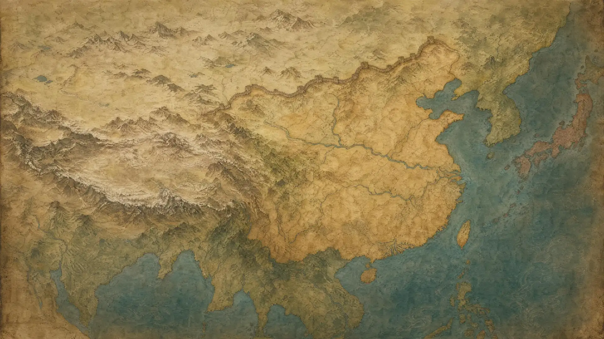
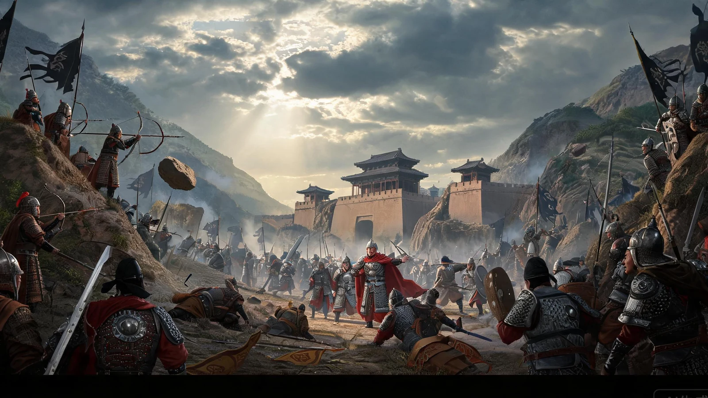
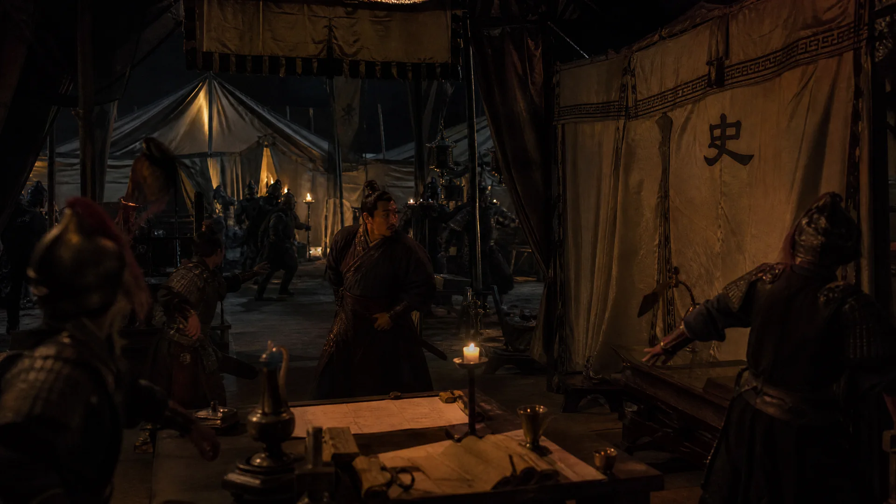
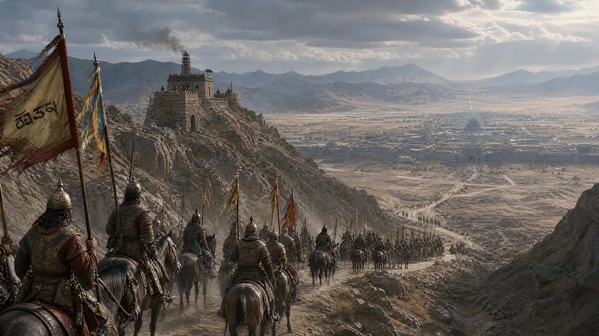

召见与群议在朝堂、密诏、远奏三种场景下问策；多人朝议会把前序发言交给后者回应。
01 · 项目是什么
用自己的话，处理大唐的危局
《安史之乱：中唐续命》是一款联网的历史策略游戏。玩家以最高决策者身份，从潼关之战前后开始处理军令冲突、前线情报、钱粮调度和朝局分裂。游戏刻意弱化预制选项，把自由问话、群臣议政和拟写诏书放在决策中心。

长安潼关范阳
地图不是装饰。地区控制、民心、动乱、军压与驻军会随回合改变；点选地区即可查看它为何正在失控。
外行人可以把它理解为一局会记事的历史桌游
大语言模型负责让角色说话、让世界提出反应；程序规则负责钱粮、兵力、日期和结局。玩家获得的是能自由表达的空间，而不是一句漂亮话改写一切的错觉。
御笔拟诏自然语言命令先被写成唐廷文书，再由文书模型拆成可核查的行动候选。
回合推演裁决、诏令、军政规则和世界反应在同一回合结算，形成下一次朝议的局势。
02 · 一回合怎么进行
先问策，再颁诏，最后让天下回应
游戏循环把“对话”放在行动之前。玩家可以先暂存御前裁决、继续召见相关人物、把自己的意图写进诏书；行动事项、裁决与世界推演会在颁诏时合并结算。
读取军国局势
地区、军队、粮储、民心、事件时钟与不确定情报共同构成当前问题。
单独问策或廷议
人物按身份、立场、关系记忆和所在场景回应，不同意见可以当殿交锋。
写下皇帝的意图
玩家使用自然语言下令；文书模型生成圣旨并提出 JSON 行动候选。
确认行动与裁决
本地校验目标、类别与投入幅度。未通过的候选不会进入权威状态。
统一结算一回合
硬规则、战役裁决、受约束世界推演、纪事和自动存档依次完成。
裁决不再等于结算
御前裁决只会先进入本回合待颁事项。玩家仍可关闭裁决、召见人物、拟写圣旨；直到点击“颁诏并裁决”，规则系统才会一并应用其后果。
03 · 对话是主要界面
同一位大臣，在不同场景说不同的话
不是把聊天窗口套在策略游戏上。朝堂、密诏和远奏拥有不同的公开性与信息边界；诏书和裁决则把自由文本收束为可验证的国家行动。
分立左右
三省六部与军镇人物在班候旨。公开场景中，人物需要顾及名分、派系与在场者。
不公开的判断
密诏允许人物谈隐忧、试探和无法在殿上直言的权衡，同时留下关系与承诺。
消息有距离
远奏只能基于地方见闻，人物需要承认军情迟滞，不能替中枢宣称全知。
圣旨由文书模型起草
它必须保留玩家写下的人名、数额、对象和意图；同时把能够执行的部分以 JSON 提交给本地校验器。
暂存后再颁行
裁决不是立即跳过回合，而是和诏令、行动事项进入同一份待颁清单。
04 · AI 如何可靠落地
模型有发言权，没有最终改档权
这个项目没有让一个模型包办人物、文书、世界状态和存档。三类模型依据各自擅长的任务被独立配置；本地规则与校验器始终掌握权威数据的写入权限。
玩家与朝堂
问话、群议、密诏、御前裁决、自由诏书。玩家提供意图，也保留最终确认权。
确定性军政引擎
先结算兵力、钱粮、路线、补给、战役时钟和已确认行动，再把完整上下文交给模型。它是唯一能写入国家状态的一层。
硬规则→模型 JSON→白名单校验→纪事与存档
受约束的世界反应
模型提出人物动向、事件伏线与温和的软状态变化；它不会凭叙事直接创造兵力、现金或战果。
人物议政模型
面向人设一致性和场景表达。它读取人物身份、公共立场、近期对话与关系记忆，生成朝堂、密诏、远奏和多人议政中的角色回应。
输入：人物 + 场景 + 局势 + 前序发言
输出：角色台词
不能做：修改数值或替玩家下令回合推演模型
面向长上下文与多因素判断。它读取硬规则后的国势，提出对民心、动乱、士气、补给、忠诚和事件伏线的 JSON 建议。
输入：硬结算 + 全局状态
输出：受限 JSON 提案
不能做：改兵力、钱粮、日期、章节与硬战果文书与记忆模型
面向高频、低成本的文书工作。它把玩家意图润色为唐廷圣旨，拆出行动候选，并可承担奏折整理与长期记忆摘要。
输入：自由诏意 + 可用目标
输出：圣旨 + JSON 行动候选
不能做：生成不存在的目标或越权事项05 · 为什么需要推演模型
它负责“反应”，不是“替你算账”
如果只有对话模型，世界不会因玩家行为产生持续变化；如果让推演模型直接改存档，游戏又会失去可解释性。因此推演模型被放在硬规则之后，专门处理规则难以穷举的人心、派系、地方与人物反应。
模型可以提出的变化
每一条提案都带原因和目标路径。程序只接受明确白名单内、幅度有限、类型正确的状态变化；其余内容会被裁剪或拒绝。
地区民心 / 动乱 / 城防军队士气 / 补给事项压力 / 进度人物忠诚NPC 行动意图后续事件伏线
模型不能碰的状态
这些是游戏可信度的底线。即便模型文笔再好，也不能把一次漂亮回答变成无代价的胜利。
现金、粮仓、兵力日期与章节进度硬规则战斗结果未定义的行动目标
最终回合纪录来自“已经被应用的结果”，不是模型的原始想象。这让玩家能看见：哪项变化来自诏令，哪项来自战役裁决，哪项是经校验后进入世界的社会反应。
06 · Codex 如何参与开发
人做取舍，Agent 扩大调研与实现速度
第一阶段用一日调研和一日构建完成可运行原型，之后持续补全朝堂、战役、美术与模型边界。Codex 负责把任务拆成可并行的工程单元；人负责主题选择、历史取舍、模型边界和最终验收。
把“像某个游戏”变成独立的设计
审计参考项目的框架，整理安史之乱时间线、人物、地区、军队与数值口径，确定“对话优先、规则托底、五幕战役”的产品方向。
搭起一局能玩完的国家模拟
建立 React + FastAPI + SQLite 的最小闭环，接入人物对话、战役时钟、回合结算、存档与模型配置，交付可运行原型。
把原型磨成游戏界面
补全三省六部人物、左右朝班、诏书与裁决、地图点选、章节内容、受约束世界推演与 Seedream 美术资产。
07 · 生成式美术资产
让唐廷、军镇与人物共享一套视觉语言
项目使用 Seedream 5.0 生成美术资产，并经过尺寸归一化、场景筛选和 WebP 压缩后接入。美术提示词围绕唐代器物、矿物颜料、克制电影光影与明确的历史服饰约束，而不是生成泛古装素材。





42人物立绘
9章节与场景背景
16事件插图
2诏书与裁决纸面
08 · 可验收的交付
不是概念演示，而是一套可运行的游戏闭环
当前版本覆盖从新开游戏、读取存档到多人朝议、自由拟诏、事件裁决和自动存档的完整路径。每个模型职责都可在界面中单独配置，联网失败时不会突破本地规则边界。
React + TypeScript
朝堂、地图、诸军、国策、史册、诏书、裁决、群议和存档界面。
FastAPI + Pydantic
统一 API、输入校验、模型职责路由与回合编排。
Python + SQLite
确定性军政规则、战役进度、行动事项、自动存档与可回放状态。
31 项自动测试
覆盖内容加载、战役推进、AI 输出边界、诏令、存档、策略与世界推演。
当前边界：模型让人物与世界产生高质量、可变的表达和建议；历史资料、硬规则、校验器与玩家确认共同决定哪些内容能进入游戏状态。下一步重点是继续扩充事件插图、补足后期章节互动，并根据玩家验收调整数值与界面密度。